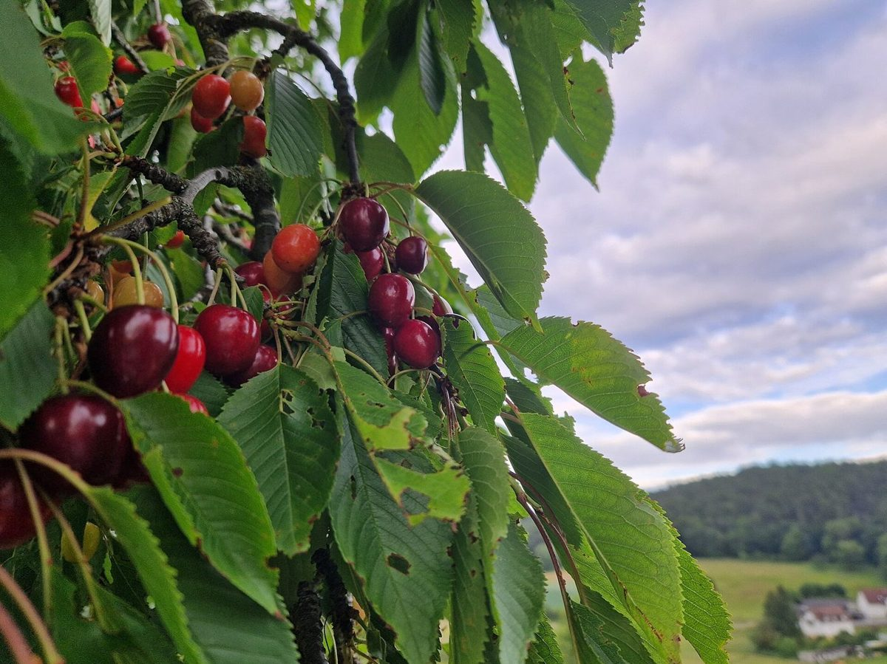
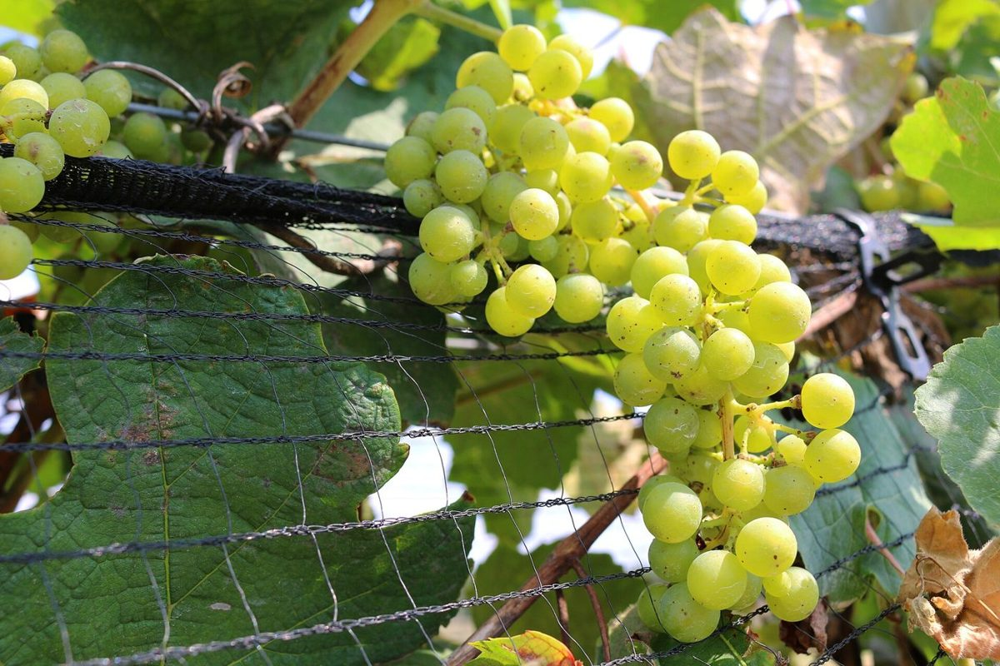

MENU
メニュー



お品書き
メニュー・価格は準備中
メニューと価格は準備中です。お店からご提供いただいた内容で作り直します。
| メニュー | 準備中 |
|---|---|
| 価格 | 準備中 |
| ご予約 | 準備中 |
凡例
メニューの代わりに、部位の一覧
お品書きの代わりに、このサイトのテーマ「エスプレッソマシンの部位」を一覧にしています。制作側の連想で、お店の理念・由来とは無関係です。実際の製品の仕様を示すものでもありません。
1
グループヘッド
粉を詰めた器具を差し込み、お湯を送り出す、機械前面中央の金具。
2
ポルタフィルター
持ち手のついた金属の器具。粉を詰めるバスケットを受ける部分。
3
スチームノズル
蒸気を出す細い管。機械の側面から斜め下へ伸びる。
4
圧力計
丸い文字盤と針で、内部の圧力の目安を示す計器。
5
水タンク
機械の上にある、水をためておく透明な容器。
6
ドリップトレイ
落ちたしずくや余った水を受け止める、最下段の受け皿。


イメージ
写真はすべて、フリー素材のイメージ
写真は果物などのイメージです。お店のものではなく、お店で提供している商品を示すものでもありません。